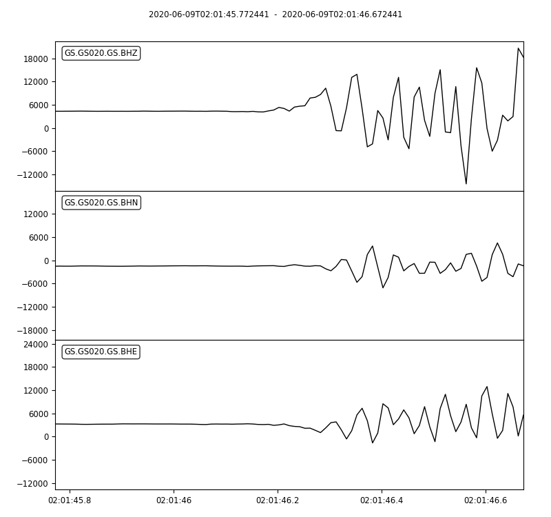
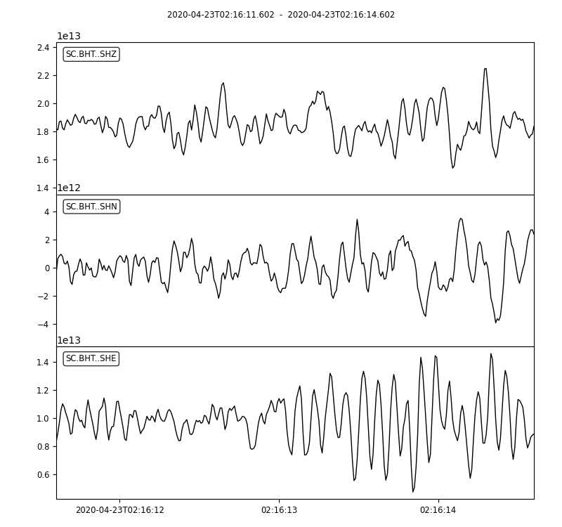
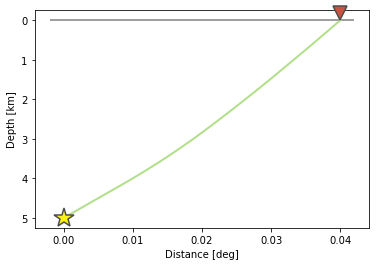

Earthquake Absolute Location
Introduction
The earthquake detection process finds the arrival times of P&S wave on different stations for each event. The next step is to get the earthquake location (longitude(x),latitude(y),depth(z)) and origin time (t). A direct idea is to set up equations based on the relationship between distance, velocity, and travel time. However, due to complexities in real geophysical setting, a solution that fits all equations rarely exists.
The most widely used methods are based on least-square algorithm. That is, the place that has the minimum misfit with observations is accepted as the earthquake location. One least-square method is the grid search method. In this method, the possible space is splited into 3D grids, and then the misfit of each grid as the earthquake location is calculated one by one. The earthquake is then considered to be occurred inside the grid with minimum misfit. The grid size controls the earthquake location resolution, a larger grid size will lead to a larger uncertainty (the range where the true earthquake location might be). However, a smaller grid size will lead to heavy calculation load due to dramtically increased grid quantity. Therefore, there is a trade-off between resolution and calculation efficiency in this method.
Another least-square earthquake location method is the iterative absolute earthquake location method, which can achieve high-resolution location with ideal calculation efficiency and is widely used. In this session, we introduce the details of this method. We start from simple one-layer model for practice and then run into real data processing using the popular HYPOINVERSE program, which is developed based on the iterative absolute earthquake location method.
Theory Background

The arrival time recorded by one station could be presented as:
where \(T_i^k\) is the arrival time of event \(k\) on station \(i\). In the right side of equation, there are two components: 1) The origin time of event \(k\) \(O_k\); 2) The event travel time. It is the integral over the ray path. The \(s\) denotes the source location, \(r\) represents the receiver (station) location, \(u\) is the reciprocal of velocity named slowness.
Assume the event with true source parameters \(\mathbf{m_{true}}=(x_{true},y_{true},z_{true},o_{true})^T\) is recorded by \(n\) stations, we use \(\mathbf{d_obs}\) to denote the arrival times of stations, then \(\mathbf{m_{true}}\) should satisfy:
The relationship between \(\mathbf{m}\) and \(\mathbf{d}\) is non-linear because integral is involved as shown in previous equation. For earthquake parameters that are close to \(\mathbf{m_{true}}\), we present them as \(\mathbf{m=m_{true}+\Delta{m}}\), the \(\mathbf{\Delta m}\) will lead to variation in \(\mathbf{d_{obs}+\Delta d}\)
According to Taylor Expansion theorem, we have:
Neglect the items after the first-order partial derivative, we then have \(\mathbf{\Delta d = F'\Delta m}\).
Given the initial location and origin time \(\mathbf{m_0}=(x_0,y_0,z_0,t_0)\), we can calculate the corresponding arrival time at each station \(\mathbf{d_cal}\) and the \(\mathbf{\Delta d}\). Using the \(\mathbf{\Delta d}\) we can estimate the \(\mathbf{\Delta m}\). By updating the \(\mathbf{\Delta m}\), an absolute location of hypocenter can be derived.
Contents of this tutorial
We will introduce how to derive and analyze absolute locations of hypocenters in pyhon which has been devided into listed parts:
Gird search method
Iteration method
Error analyze
Authors: ZI Jinping & SONG Zilin, Earth Science System Program, CUHK.
Testers: XIA Zhuoxuan & SUN Zhangyu, Earth Science System Program, CUHK.
Python Environment and model Setup
We’ll first generate synthetic arrival times on stations from one earthquake location, which is called Forward Modelling. We’ll then try to re-generate hypocentral location using these known station arrival times, which is called Inversion. In this tutorial, we use one-layer model to avoid complicated ray-tracing (Snell's law)
Note
Python environment
import numpy as np
import matplotlib.pyplot as plt
import time
from matplotlib.patches import Ellipse
from mpl_toolkits.mplot3d import Axes3D
Note
def matrix_show(*args,**kwargs):
"""
Show matrix values in grids shape
Parameters:cmap="cool",gridsize=0.6,fmt='.2f',label_data=True
"""
ws = []
H = 0
str_count = 0
ndarr_count = 0
new_args = []
for arg in args:
if isinstance(arg,str):
new_args.append(arg)
continue
if isinstance(arg,list):
arg = np.array(arg)
if len(arg.shape)>2:
raise Exception("Only accept 2D array")
if len(arg.shape) == 1:
n = arg.shape[0]
tmp = np.zeros((n,1))
tmp[:,0] = arg.ravel()
arg = tmp
h,w = arg.shape
if h>H:
H=h
ws.append(w)
new_args.append(arg)
ndarr_count += 1
W = np.sum(ws)+len(ws) # text+matrix+text+...+matrix+text
if W<0:
raise Exception("No matrix provided!")
fmt = '.2f'
grid_size = 0.6
cmap = 'cool'
label_data = True
for arg in kwargs:
if arg == "fmt":
fmt = kwargs[arg]
if arg == 'grid_size':
grid_size = kwargs[arg]
if arg == 'cmap':
cmap = kwargs[arg]
if arg == 'label_data':
label_data = kwargs[arg]
fig = plt.figure(figsize=(W*grid_size,H*grid_size))
gs = fig.add_gridspec(nrows=H,ncols=W)
wloop = 0
matrix_id = 0
for arg in new_args:
if isinstance(arg,str):
ax = fig.add_subplot(gs[0:H,wloop-1:wloop])
ax.axis("off")
ax.set_xlim(0,1)
ax.set_ylim(0,H)
ax.text(0.5,H/2,arg,horizontalalignment='center',verticalalignment='center')
if isinstance(arg,np.ndarray):
h,w = arg.shape
hlow = int(np.round((H-h+0.01)/2)) # Find the height grid range
hhigh = hlow+h
wlow = wloop
whigh = wlow+w
# print("H: ",H,hlow,hhigh,"; W ",W,wlow,whigh)
ax = fig.add_subplot(gs[hlow:hhigh,wlow:whigh])
plt.pcolormesh(arg,cmap=cmap)
for i in range(1,w):
plt.axvline(i,color='k',linewidth=0.5)
for j in range(1,h):
plt.axhline(j,color='k',linewidth=0.5)
if label_data:
for i in range(h):
for j in range(w):
plt.text(j+0.5,i+0.5,format(arg[i,j],fmt),
horizontalalignment='center',
verticalalignment='center')
plt.xlim(0,w)
plt.ylim([h,0])
plt.xticks([])
plt.yticks([])
wloop+=w+1
matrix_id+=1
plt.show()
Model setup
Define basic parameters:
Station locations (stats)
True hypocenter location (hyc_true)
Velocity (Vp)
stas_set1 = np.array([[-45,16,0],
[-44,10,0],
[-12,50,0],
[-11,-25,0],
[-1,-11,0],
[5,-19,0],
[20,11,0],
[23,-39,0],
[35,9,0],
[42,-27,0]])
stas = stas_set1
nsta = stas.shape[0]
hyc_true = np.array([0.5,0.5,9.45,0]) # The true hypocenter value(x,y,z,t)
Vp = 5
plt.plot(stas[:,0],stas[:,1],'^',label="Station")
plt.plot(hyc_true[0],hyc_true[1],'r*',label='True hypocenter')
plt.xlabel("X (km)")
plt.ylabel("Y (km)")
plt.gca().set_aspect("equal")
plt.legend();
Generate synthetic arrival times
dobs = np.zeros((nsta,1))
for i in range(dobs.shape[0]):
dx = stas[i,0]-hyc_true[0]
dy = stas[i,1]-hyc_true[1]
dz = stas[i,2]-hyc_true[2]
dobs[i,0] = np.sqrt(dx**2+dy**2+dz**2)/Vp+hyc_true[3]
nobs = dobs.shape[0]
The Grid-Search Method
The grid search method separates the possible earthquake location zone into 3-D grids, trying each grid as earthquake center and calculating the residual. The grid where earthquake is located should has the lowest residual.
1. Set up grids
dx = 1
dy = 1
dz = 1
xs = np.arange(-40,41,dx)
ys = np.arange(-40,41,dy)
zs = np.arange(0,20,dz)
nx = len(xs)
ny = len(ys)
nz = len(zs)
print("Total number of nodes are: ",) # For students, fill in the blank
fig = plt.figure(figsize=(6,6))
ax = plt.axes(projection='3d')
nodes = []
for x in xs[:-1]:
for y in ys[:-1]:
for z in zs[:-1]:
nodes.append([x,y,z])
nodes = np.array(nodes)
ax.scatter3D(nodes[:,0],nodes[:,1],nodes[:,2],c=nodes[:,2],s=0.1)
ax.set_xlabel("X (km)")
ax.set_ylabel("Y (km)")
ax.set_zlabel("Dep (km)")
ax.set_zlim([20,0])
plt.show()
2. Try each grid and calculate error
V = Vp
sq_errs = np.zeros((nx,ny,nz))
ta = time.time() # The time before calculation
for i in range(len(xs)):
for j in range(len(ys)):
for k in range(len(zs)):
dcal = np.zeros((nsta,1))
x = xs[i];y=ys[j];z=zs[k]
for m in range(nsta):
sta_x = stas[m,0]
sta_y = stas[m,1]
sta_z = stas[m,2]
dist = np.sqrt((sta_x-x)**2+(sta_y-y)**2+(sta_z-z)**2)
dcal[m,0] = dist/V
sq_err = np.linalg.norm(dobs-dcal)**2
sq_errs[i,j,k] = sq_err
tb = time.time() # The time after calculation
print("Time for location process: ",format(tb-ta,'.3f'),'s')
3. Find the minimum misfit grid
sq_err_min = np.min(sq_errs) # Get the min value
sq_err_max = np.max(sq_errs)
kk = np.where(sq_errs==sq_err_min) # Get the value indexs
idx = kk[0][0]
idy = kk[1][0]
idz = kk[2][0]
print(f"Minimum occurred in x={xs[idx]}, y={ys[idy]}, z={zs[idz]}")
Minimum occurred in x=1, y=1, z=9
ncol = 4
if nz%ncol==0:
nrow = int(nz/ncol)
else:
nrow = int(nz/ncol)+1
xs_mesh,ys_mesh = np.meshgrid(xs,ys)
fig, axs = plt.subplots(nrow,ncol,figsize=(2.5*ncol,2*nrow),sharex=True,sharey=True)
axs = axs.ravel()
for i in range(nz):
axs[i].pcolormesh(xs_mesh,ys_mesh,sq_errs[:,:,i],
shading='auto',cmap='jet',vmin=sq_err_min,vmax=sq_err_max)
plt.sca(axs[i]) # set current active axis
plt.colorbar(pm)
tmp_sq_err_min = np.min(sq_errs[:,:,i])
_tmp_sq_err_min = format(tmp_sq_err_min,'6.3f')
tmp_kk = np.where(sq_errs[:,:,i]==tmp_sq_err_min)
idx = tmp_kk[0][0]
idy = tmp_kk[1][0]
_Z = str(zs[i]).zfill(2)
if tmp_sq_err_min == sq_err_min:
print(f"Z={_Z},min_sq_error={_tmp_sq_err_min}, x={xs[idx]}, y={ys[idy]},global minimum")
axs[i].plot(xs[idx],ys[idx],'wx',ms=10)
else:
print(f"Z={_Z},min_sq_error={_tmp_sq_err_min}, x={xs[idx]}, y={ys[idy]}")
axs[i].set_aspect('equal')
axs[i].set_title(f"Depth={zs[i]} km")
# adjust plot
plt.tight_layout()
Z=00,min_sq_error= 0.915, x=0, y=2
Z=01,min_sq_error= 0.898, x=0, y=2
Z=02,min_sq_error= 0.845, x=0, y=1
Z=03,min_sq_error= 0.743, x=0, y=1
Z=04,min_sq_error= 0.613, x=0, y=1
Z=05,min_sq_error= 0.469, x=0, y=1
Z=06,min_sq_error= 0.326, x=0, y=1
Z=07,min_sq_error= 0.203, x=0, y=1
Z=08,min_sq_error= 0.119, x=0, y=1
Z=09,min_sq_error= 0.072, x=1, y=1,global minimum
Z=10,min_sq_error= 0.073, x=0, y=0
Z=11,min_sq_error= 0.147, x=1, y=0
Z=12,min_sq_error= 0.323, x=1, y=0
Z=13,min_sq_error= 0.641, x=1, y=0
Z=14,min_sq_error= 1.124, x=1, y=0
Z=15,min_sq_error= 1.757, x=1, y=-1
Z=16,min_sq_error= 2.562, x=1, y=-1
Z=17,min_sq_error= 3.594, x=1, y=-1
Z=18,min_sq_error= 4.874, x=1, y=-1
Z=19,min_sq_error= 6.422, x=1, y=-1
Z=20,min_sq_error= 8.226, x=1, y=-2

Exercise
Modify V=4.9 and redo the grid search, what do you find?
Iterative Method
The arrival time recorded by one station could be presented as:
where \(T_i^k\) is the arrival time of event k on station i, s is source, r is receiver, u is slowness. In the right side of equation, there are two components:
The origin time :math: O_k;
The travel time. It is the integral over the ray path.
It could be presented as below:
Note the equation above is non-linear. Using Taylor Expansion, we have:
where \(\mathbf{m} = (x,y,z,t)\). Ingoring high-order component:
It means the misfit of data is related to the misfit of earthquake location, the relationship is presented as:
More in detail:
where \(ds=\sqrt{(dx)^2+(dy)^2+(dz)^2}\)
For one-layer model, \(T_i^k=o_t +\sqrt{x^2+y^2+z^2}/v\), where \(x,y,z\) denotes distance between the source (earthquake location) and receiver(station), \(v\) is velocity. Partial derivatives of one-layer model are:
After solve this equation, we can update the earthquake location:
This process generally will not finish in one iteration, more iterations are needed to update the locations until no apparent change of misfit.

1. Give an initial source parameters
The station which records the earliest arrival is the cloest to the hypocenter, so it is reasonable to be set as initial location:
The same x and y with the closest station;
Initial depth at 5 km;
Initial origin time 1 sec before the earliest arrival;
idx = np.argmin(dobs) # The index of station
dmin = np.min(dobs) # The minimum arrival time
hyc_init = np.zeros(4); # Init array
hyc_init[:2] = stas[idx,:2]; # Set the same x,y with station
hyc_init[2] = 5; # Set initial depth 5 km
hyc_init[3] = dmin-1; # Set initial event time 1s earlier than arrival
hyc_loop = hyc_init.copy()
2. Calculate the arrival times based on input location
dcal = np.zeros((nsta,1))
for i in range(dobs.shape[0]):
dx = stas[i,0]-hyc_loop[0]
dy = stas[i,1]-hyc_loop[1]
dz = stas[i,2]-hyc_loop[2]
dcal[i,0] = np.sqrt(dx**2+dy**2+dz**2)/Vp+hyc_loop[3]
3. Measure the misfit between the \(d_{obs}\) and the \(d_{cal}\)
delta_d = dobs - dcal
e2 = 0
for i in range(delta_d.shape[0]):
e2 += delta_d[i,0]**2
print(f"The square error: ",format(e2,'5.6f'))
The square error: 49.466691
4. Calculate Partial Derivatives
G = np.zeros((nsta,4))
for i in range(nsta):
for j in range(3):
denomiter = np.sqrt((hyc_loop[0]-stas[i,0])**2+(hyc_loop[1]-stas[i,1])**2+(hyc_loop[2]-stas[i,2])**2)
G[i,j]=(hyc_loop[j]-stas[i,j])/denomiter/Vp
G[:,3]=1
5. Estimation of \(\Delta m\), generalized inversion problem
Define \(\Delta m = (\Delta x, \Delta y, \Delta z,\Delta t)\), the relationship between \(\Delta m\) and \(\Delta d\) is:
\(G\) is not a square matrix, \(G^TG\) is a square matrix, we then have:
If the inverse of \(G^TG\) exists (the determinnant != 0, in here we have 10 observations to solve for 4 parameters), then:
GTG = np.matmul(G.T,G)
matrix_show(G.T,"*",G,"=",GTG)
GTG_inv = np.linalg.inv(GTG)
GTG_inv_GT = np.matmul(GTG_inv,G.T)
delta_m = np.matmul(GTG_inv_GT,delta_d)
print("delta m: ",delta_m.ravel())
delta m: [ 1.27106047 10.82922813 9.25013738 -1.91360853]
6. Update hypocenter
hyc_loop = np.add(hyc_loop,delta_m.ravel())
print("After this run, results (x,y,z,t) are:",hyc_loop)
print("True location parameters(x,y,z,t) are:",hyc_true)
After this run, results (x,y,z,t) are: [ 0.27106047 -0.17077187 14.25013738 0.07839748]
True location parameters(x,y,z,t) are: [0.5 0.5 9.45 0. ]
7. Start new iteration
Move back to step two
8. Integrated Solution
Summarize previous steps into a loop function
k = 0
niter = 10
hyc_loop = hyc_init.copy()
dcal = np.zeros((10,1))
for i in range(dobs.shape[0]):
dx = stas[i,0]-hyc_loop[0]
dy = stas[i,1]-hyc_loop[1]
dz = stas[i,2]-hyc_loop[2]
dcal[i,0] = np.sqrt(dx**2+dy**2+dz**2)/Vp+hyc_loop[3]
delta_d = dobs - dcal
while k < niter:
# >>>>> Build G matrix >>>>>>
G = np.zeros((10,4))
G[:,3]=1
for i in range(10):
for j in range(3):
denomiter = np.sqrt((hyc_loop[0]-stas[i,0])**2+(hyc_loop[1]-stas[i,1])**2+(hyc_loop[2]-stas[i,2])**2)
G[i,j]=(hyc_loop[j]-stas[i,j])/denomiter/Vp
# >>>>> Invert the m value >>>>
GTG = np.matmul(G.T,G)
GTG_inv = np.linalg.inv(GTG)
GTG_inv_GT = np.matmul(GTG_inv,G.T)
delta_m = np.matmul(GTG_inv_GT,delta_d)
# >>>>> Update the hypocenter loop >>>>>
hyc_loop = np.add(hyc_loop,delta_m.ravel())
k = k+1
dcal = np.zeros((10,1))
for i in range(dobs.shape[0]):
dx = stas[i,0]-hyc_loop[0]
dy = stas[i,1]-hyc_loop[1]
dz = stas[i,2]-hyc_loop[2]
dcal[i,0] = np.sqrt(dx**2+dy**2+dz**2)/Vp+hyc_loop[3]
delta_d = dobs - dcal
e2 = 0
for i in range(delta_d.shape[0]):
e2 += delta_d[i,0]**2
print(f"Iteration {k} square error: ",format(e2,'10.8f'))
# >>>>> add codes to end the loop if error is small >>>>>
hyc_estimate = hyc_loop
print(hyc_estimate)
Iteration 1 square error: 1.85
Iteration 2 square error: 0.03
Iteration 3 square error: 0.00
Iteration 4 square error: 0.00
[5.00000001e-01 5.00000005e-01 9.45000023e+00 7.74200567e-09]
Exercise (10 min)
Calculate the time used for the iterative location. Compare it with the grid search method.
It is a common practice that if the square error lower than a threshold, finish the iteration in advance. Add one criterion in above codes: if square error lows than 0.0000001, break the iteration.
It is common to set up an indicator parameter “istop” to show the stop reason of iteration, if iteration stops due to run over all the iterations, then istop = 0; if the iteration stops due to error threshold achieved, then istop = 1.
Try to change parameters, e.g. Vp, hyc_true, what’s the maximum iterations needed to converge?
More Practical Case
In the iterative earthquake case, we first generate the arrival times and then invert for the earthquake location, we find that it is very efficient, fast, and accurate to do so. The error decreases to nearly 0 in around 3 iterations. However, in real cases, it is rare to have error decreased to nearly 0 due to series of factors:
Phase picking error;
Time - error of stations;
Others.
Phase-Picking Error
Could you find the P arrival in below waveforms?
 {kind=link}
{kind=link}
Note
It is reasonable to assume the picking errors follow the Gaussian Distribution, the probability we pick the phase arrival close to the true arrival is high and the probability that picked phase is far offset the true arrival is weak.

Credit: Wikipedia
Generate random normal distribution error in python
mu = 0
sigma = 0.1
errors = np.random.normal(mu,sigma,size=(100000,1))
bins = np.arange(mu-3*sigma,mu+3*sigma,0.01)
plt.hist(errors,bins=bins);
plt.xlabel("Error")
plt.ylabel("Quantity")

Generate repeatable random normal distribution noise
print("Below ten sets of random data:")
for i in range(10):
errors = np.random.normal(mu,sigma,size=(5,1))
print(errors.ravel())
print("Below ten sets of repeatable random data:")
for i in range(10):
seed = 5
np.random.seed(seed)
errors = np.random.normal(mu,sigma,size=(5,1))
print(errors.ravel())
Below ten sets of random data:
[ 0.14576948 -0.03545659 0.01865004 0.06909433 0.10035061]
[-0.11188185 -0.00634874 0.12890032 -0.1214119 -0.07929655]
[-0.08868027 0.07272929 -0.04400131 0.03902781 -0.05310638]
[-0.19492339 0.05280531 0.01207171 -0.02196256 0.03234145]
[ 0.03812467 0.19008607 0.0689304 -0.06495476 -0.03542378]
[-0.16057787 0.00484336 -0.00963628 -0.09241747 -0.10234195]
[-0.0997116 0.07139755 -0.03709032 0.07398414 -0.04919343]
[ 0.04309643 0.01775167 0.11226868 -0.03265422 0.29264822]
[-0.10930484 0.03639013 0.08391139 0.0606412 -0.07792868]
[-0.00797514 -0.08165227 0.04543699 0.0669631 -0.16680696]
Below ten sets of repeatable random data:
[ 0.04412275 -0.03308702 0.24307712 -0.02520921 0.01096098]
[ 0.04412275 -0.03308702 0.24307712 -0.02520921 0.01096098]
[ 0.04412275 -0.03308702 0.24307712 -0.02520921 0.01096098]
[ 0.04412275 -0.03308702 0.24307712 -0.02520921 0.01096098]
[ 0.04412275 -0.03308702 0.24307712 -0.02520921 0.01096098]
[ 0.04412275 -0.03308702 0.24307712 -0.02520921 0.01096098]
[ 0.04412275 -0.03308702 0.24307712 -0.02520921 0.01096098]
[ 0.04412275 -0.03308702 0.24307712 -0.02520921 0.01096098]
[ 0.04412275 -0.03308702 0.24307712 -0.02520921 0.01096098]
[ 0.04412275 -0.03308702 0.24307712 -0.02520921 0.01096098]
Update the observed data by adding noise
mu = 0 # mean of error
sigma = 0.1 # standard deviation of error
np.random.seed(100)
errors = np.random.normal(mu,sigma,size=(nsta,1))
dobs_noise = dobs+errors
Re-run the inversion
Vp = 5
k = 0
niter = 10
hyc_loop = hyc_init.copy()
while k < niter:
dcal = np.zeros((10,1))
for i in range(dobs_noise.shape[0]):
dx = stas[i,0]-hyc_loop[0]
dy = stas[i,1]-hyc_loop[1]
dz = stas[i,2]-hyc_loop[2]
dcal[i,0] = np.sqrt(dx**2+dy**2+dz**2)/Vp+hyc_loop[3]
delta_d = dobs_noise - dcal
e2 = 0
for i in range(delta_d.shape[0]):
e2 += delta_d[i,0]**2
print(f"Iteration {k} square error: ",format(e2,'5.2f'))
# >>>>> Build G matrix >>>>>>
G = np.zeros((10,4))
G[:,3]=1
for i in range(10):
for j in range(3):
denomiter = np.sqrt((hyc_loop[0]-stas[i,0])**2+(hyc_loop[1]-stas[i,1])**2+(hyc_loop[2]-stas[i,2])**2)
G[i,j]=(hyc_loop[j]-stas[i,j])/denomiter/Vp
# >>>>> Invert the m value >>>>
GTG = np.matmul(G.T,G)
GTG_inv = np.linalg.inv(GTG)
GTG_inv_GT = np.matmul(GTG_inv,G.T)
delta_m = np.matmul(GTG_inv_GT,delta_d)
if np.array_equal(delta_m.ravel(),[0,0,0,0]):
print("Here")
# >>>>> Update the hypocenter loop >>>>>
hyc_loop = np.add(hyc_loop,delta_m.ravel())
k = k+1
# >>>>> End the loop if error is small >>>>>
if e2<0.000001:
break
hyc_estimate = hyc_loop
print(hyc_estimate)
Iteration 0 square error: 49.76
Iteration 1 square error: 1.84
Iteration 2 square error: 0.09
Iteration 3 square error: 0.07
Iteration 4 square error: 0.07
Iteration 5 square error: 0.07
Iteration 6 square error: 0.07
Iteration 7 square error: 0.07
Iteration 8 square error: 0.07
Iteration 9 square error: 0.07
[ 0.66712215 0.30531256 9.67044461 -0.03328683]
Exercise (2 min)
What do you find from the inversion? compare the results with the previous run.
Change the sigma value and check the variation of the inversion results.
Error analysis
The error in observed data will definitely lead to uncertainties in the estimation of earthquake location parameters. Their relationship could be described as:
For two parameters, the definition of covariance is:
Note
sigma_d = np.std(delta_d)
sigma_d2 = sigma_d**2
sigma_m2 = sigma_d2 * GTG_inv
def present_loc_results(hyc,sig_square=None,std_fmt='.2f'):
"""
Print earthquake location results
"""
_x = format(np.round(hyc[0],4),format("6.2f"))
_y = format(np.round(hyc[1],4),format("6.2f"))
_z = format(np.round(hyc[2],4),format("6.2f"))
_t = format(np.round(hyc[3],4),format("6.2f"))
if not isinstance(sig_square,np.ndarray):
print("x = ",_x," km")
print("x = ",_y," km")
print("z = ",_z," km")
print("t = ",_t," s")
else:
stdx = sig_square[0,0]**0.5
_stdx = format(np.round(stdx,4),std_fmt)
stdy = sig_square[1,1]**0.5
_stdy = format(np.round(stdy,4),std_fmt)
stdz = sig_square[2,2]**0.5
_stdz = format(np.round(stdz,4),std_fmt)
stdt = sig_square[3,3]**0.5
_stdt = format(np.round(stdt,4),std_fmt)
print("x = ",_x,"±",_stdx," km")
print("y = ",_y,"±",_stdy," km")
print("z = ",_z,"±",_stdz," km")
print("t = ",_t,"±",_stdt," s")
present_loc_results(hyc_estimate,sigma_m2)
x = 0.67 ± 0.20 km
y = 0.31 ± 0.22 km
z = 9.67 ± 0.99 km
t = -0.03 ± 0.06 s
Question (2 min)
Test different parameters and see how standard error ($sigma$) changes, which parameter has the largest standard error? which parameter has the minimum standard error? Why? .. note:: | Check \((G^TG)^{-1}\), \((G^TG)\) and \(G\) values
Covariance Matrix
From the covariance matrix, we can estiamte the uncertainty(\(\sigma\)) of x,y,z,t using \(\sigma_x^2\),\(\sigma_y^2\),\(\sigma_z^2\),\(\sigma_t^2\)
matrix_show(sigma_m2,fmt='.3f')
Principle axes
Note that off-diagonal elements of \(\sigma_m^2\) is not zero. Using xy plane as an example, it is shape could be presented by the figure below generated. The principle axes are not along the same direction with xy axis.
angle = 30
width = 0.5
height = 0.8
ellipse = Ellipse(xy=[0,0],width=0.5,height=0.8,angle=-angle)
ellipse.set_facecolor('grey')
ellipse.set_edgecolor('black')
fig, ax = plt.subplots(subplot_kw={'aspect': 'equal'})
ax.add_artist(ellipse)
plt.xlabel("X (km)")
plt.ylabel("Y (km)")
plt.xlim([-1,1])
plt.ylim([-1,1])
plt.plot([-1,1],[0,0],'k')
plt.plot([0,0],[-1,1],'k')
plt.arrow(0,0,height/2*np.sin(np.deg2rad(angle))*0.85,height/2*np.cos(np.deg2rad(angle))*0.85,width=0.015,zorder=10)
plt.arrow(0,0,-width/2*np.cos(np.deg2rad(angle))*0.80,width/2*np.sin(np.deg2rad(angle))*0.80,width=0.015,zorder=10)
plt.plot(0.27,0,'o',color='blue',ms=8)
plt.plot(0,0.34,'o',color='red',ms=8)
plt.text(0.34,-0.1,'$\sigma_x$')
plt.text(-0.12,0.38,'$\sigma_y$')
plt.show()
Singular Value Decomposition (SVD) could be used to find the principle axes and principle values.
\(S\) is the ordered eigenvalues array. \(V\) is the corresponding eigenvectors. Below demonstrate the decomposition of errors in xy-plane.
sigma_xy2 = sigma_m2[:2,:2]
u,s,vt = np.linalg.svd(sigma_xy2)
print("Maximum eigenvalue: ",format(s[0],'.5f')," corresponding eigenvector: ",vt[0,:])
print("Minimum eigenvalue: ",format(s[-1],'.5f')," corresponding eigenvector: ",vt[-1,:])
print("The maximum/minimum eigenvalue ratio: ",format(s[0]/s[1],'.2f'))
Maximum eigenvalue: 0.05139 corresponding eigenvector: [0.35995123 0.93297112]
Minimum eigenvalue: 0.03604 corresponding eigenvector: [ 0.93297112 -0.35995123]
The maximum/minimum eigenvalue ratio: 1.43
Plot the error ellipse and stations
Note: the sigma values are small to be shown, here amplify the size by parameter size_ratio
angle = np.arctan(vt[0,0]/vt[0,1])/np.pi*180
size_ratio = 100
ellipse = Ellipse(xy=[hyc_estimate[0],hyc_estimate[1]],width=s[1]*size_ratio,height=s[0]*size_ratio,angle=-angle)
ellipse.set_facecolor('red')
ellipse.set_edgecolor('black')
fig, ax = plt.subplots(subplot_kw={'aspect': 'equal'})
ax.add_artist(ellipse)
plt.plot(stas[:,0],stas[:,1],'^',label="Station")
plt.xlabel("X (km)")
plt.ylabel("Y (km)")
plt.show()
Summary
One layer model
In the tutorial, we introduced the grid-search method and iterative location method using the one-layer velocity model. The advantage of one-layer is that the ray from the source to one station is a stright line, it is thus convenient to calculate the corresponding partial derivatives. In the real earth, however, the velocity varies due to material, pressure and other fators, the ray path is therefore a curved line, making things more complicated.
However, the key process in finding the earthquake locations remains the same.
The grid search method and the iteraive method
In this tutorial, using the iterative method, we can converge the minimum error location in limited iterations with the random initial location we set. However, in practical cases, due to the complexity of station coverage, velocity structure, and other factors, a random initiation might lead to local minimum rather than global minimum.

(Courtesy of https://medium.com/analytics-vidhya/journey-of-gradient-descent-from-local-to-global-c851eba3d367) The general solution is to conduct rough grid-search first, which could avoid local minimum effectively. Then run the iterative method from the grid search minimum.
Convenient functions
def iter_loc(hyc_loop,stas,dobs,V,niter=10,show=True):
"""
Do iterative earthquake location
Parameters:
| hyc_loop: hypoceter for iteration
| stas: array contains stations location
| dobs: observed travel time
Return:
| hyc_loop: earthquake location after iteration
| sigma_m2: square sigma matrix
| sigma_d: root mean square residual
"""
nobs = dobs.shape[0]
k = 0
while k < niter:
dcal = np.zeros((nobs,1))
for i in range(dobs.shape[0]):
dx = stas[i,0]-hyc_loop[0]
dy = stas[i,1]-hyc_loop[1]
dz = stas[i,2]-hyc_loop[2]
dcal[i,0] = np.sqrt(dx**2+dy**2+dz**2)/V+hyc_loop[3]
delta_d = dobs - dcal
e2 = 0
for i in range(nobs):
e2 += delta_d[i,0]**2
if show:
print(f"Iteration {k} square error: ",format(e2,'5.2f'))
# >>>>> Build G matrix >>>>>>
G = np.zeros((nobs,4))
G[:,3]=1
for i in range(dobs.shape[0]):
for j in range(3):
denomiter = np.sqrt((hyc_loop[0]-stas[i,0])**2+(hyc_loop[1]-stas[i,1])**2+(hyc_loop[2]-stas[i,2])**2)
G[i,j]=(hyc_loop[j]-stas[i,j])/denomiter/V
# >>>>> Invert the m value >>>>
GTG = np.matmul(G.T,G)
GTG_inv = np.linalg.inv(GTG)
GTG_inv_GT = np.matmul(GTG_inv,G.T)
delta_m = np.matmul(GTG_inv_GT,delta_d)
# >>>>> Update the hypocenter loop >>>>>
hyc_loop = np.add(hyc_loop,delta_m.ravel())
k = k+1
# >>>>> End the loop if error is small >>>>>
if e2<0.0000001:
break
sigma_d = np.std(delta_d)
sigma_d2 = sigma_d**2
sigma_m2 = sigma_d2 * GTG_inv
return hyc_loop, sigma_m2, sigma_d
hyc_abs, sigma_m2, e2 = iter_loc(hyc_init,stas,dobs,Vp)
Iteration 0 square error: 49.47
Iteration 1 square error: 1.85
Iteration 2 square error: 0.03
Iteration 3 square error: 0.00
Iteration 4 square error: 0.00
- def present_loc_results(hyc,sig_square=None,std_fmt=’.2f’):
“”” Print earthquake location results Parameters: | hyc: hypocenter |sigma_square: squared sigma matrix | std_fmt: format control of the output uncertainty “”” _x = format(np.round(hyc[0],4),format(“6.2f”)) _y = format(np.round(hyc[1],4),format(“6.2f”)) _z = format(np.round(hyc[2],4),format(“6.2f”)) _t = format(np.round(hyc[3],4),format(“6.2f”)) if not isinstance(sig_square,np.ndarray):
print(“x = “,_x,” km”) print(“x = “,_y,” km”) print(“z = “,_z,” km”) print(“t = “,_t,” s”)
- else:
stdx = sig_square[0,0]**0.5 _stdx = format(np.round(stdx,4),std_fmt) stdy = sig_square[1,1]**0.5 _stdy = format(np.round(stdy,4),std_fmt) stdz = sig_square[2,2]**0.5 _stdz = format(np.round(stdz,4),std_fmt) stdt = sig_square[3,3]**0.5 _stdt = format(np.round(stdt,4),std_fmt) print(“x = “,_x,”±”,_stdx,” km”) print(“y = “,_y,”±”,_stdy,” km”) print(“z = “,_z,”±”,_stdz,” km”) print(“t = “,_t,”±”,_stdt,” s”)
present_loc_results(hyc_abs,sigma_m2,std_fmt=’.4f’)
x = 0.50 ± 0.0000 km
y = 0.50 ± 0.0000 km
z = 9.45 ± 0.0000 km
t = -0.00 ± 0.0000 s
Play around new station dataset
stas_set2 = np.array([[-45,36,0],
[-44,30,0],
[-12,50,0],
[8,-40,0],
[-1,-11,0],
[20,-19,0],
[20,0,0],
[23,-39,0],
[35,-5,0],
[42,-27,0]])
stas = stas_set2
Homework
Using the second station dataset (stats_set2), run the inversion with noise parameters (seed=100, mu=0,sigma=0.1), plot the error ellipse and stations, could you conclude relationship between the error ellipse and the stations coverage? Show your codes and results(30 Points)
In order to enhance the Z constraint, you can change the location of one station in station dataset1, what’s your plan and why? Show your codes and results (20 points)
In previous example, we calculate the \(\sigma_d^2=\frac{1}{nobs}\sum_{i=1}^{nobs}({d_i}-\bar{d})^2\), note it is the sum of square error divided by \(nobs\) (number of observations). There are scientists proposed that the calculation should be \(\sigma_d^2=\frac{1}{nobs-k}\sum_{i=1}^{nobs}({d_i}-\bar{d})^2\), where \(nobs-k\) is called the number of degrees of freedom, \(k\) is the number of parameters determined by the data, in earthquake location process, \(k=4\) for four paramters (x,y,z,t) are inverted. Try to run the inversion 100 times with random noise \(\sigma_{true}=0.1s\), calculate the data standard error using two methods, conclude which one is more consistent with the input noise level. Show your codes and results (30 points)
What’s your comments and suggestions to this tutorial (10 points)
HYPOINVERSE Tutorial
Previous python tutorial gives intuitive familarities of the earthquake relocation process, here we further prepared a tutorial of widely used earthquake absolute location tool, the HYPOINVERSE.
Introduction of HYPOINVERSE
Hypoinverse is a computer program that processes files of seismic station data for an earthquake (like p wave arrival times and seismogram amplitudes and durations) into earthquake locations and magnitudes (Klein, 2002). It is a single event location method.
The Hypoinverse program requires the input of station locations, seismic velocity model, and the phase data. By assuming a trial origin time and hypocentral location for the earthquake, it improves them by iteratively minimizing the least square error of the travel time computed from the input information.
Environment and example
For MacOS user, Xcode is needed to be installed, run xcode-select --install and wait for finishment.